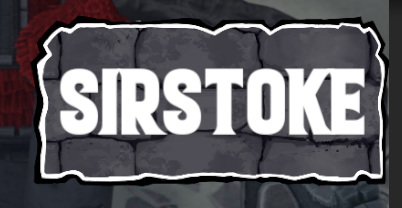

Changelog v0.3
Siamo felici di annunciare che Towers of Minduir alternera' due tipi di aggiornamenti per ogni settimana:
- Settimana del Contenuto: la amiamo tutti. Nuove carte (👀), cosmetici, eventi, funzionalita' etc.
- Settimana del Bilanciamento: lavoriamo duro affinche' non ci siano sbilanciamenti, ma purtroppo spesso facciamo errori. La Settimana del Bilanciamento servira' ad aggiustare la mira sul meta esistente in caso divenisse troppo stantio o sbilanciato
Benvenuti alla prima Settimana del Contenuto di ToM!
Menu
Classifica
Fanfara riecheggia, abbiamo aggiunto una classifica globale! ogni giocatore avra' un punteggio basato sulle proprie vittorie e sconfitte, i punteggi sono calcolati in questo modo:
+100 -20 fino a 1000 pt
+75 -40 tra 1000 e 2500 pt
+50 -60 tra 2500 e 4000 pt
+25 -80 da 4000 pt in poiRaffazzonate i vostri deck, buona fortuna!
Miglioramenti al deck builder
Attanagliate ed aggiunte delle statistiche (danno, velocita' e hp) alla descrizione delle carte
In-match
Mana
Giubilamente aggiunto un contatore testuale del mana nell'hud
Badge del nome
Canonizzato ed aggiunto un badge nell'hud che contiene il nome dell'avversario corrente - il badge diventa colorato se l'avversario e' top 3 nella classifica globale:
normale:

primo posto:

secondo posto:

terzo posto:

Audio
Annessa una sgargiante soundtrack durante il match! come al solito ogni feedback e' molto apprezzato!
Bugfixes
- Neutralizzata leggermente la sensibilita' delle notifiche. continuiamo a lavorarci costantemente, ogni feedback e' sempre ben accetto!
- NON esistate a contattarci per qualsiasi motivo attraverso i canali che conoscete